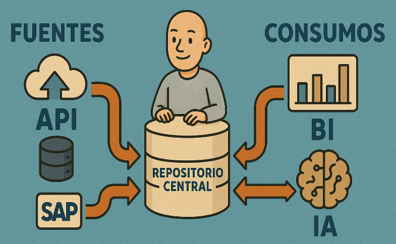
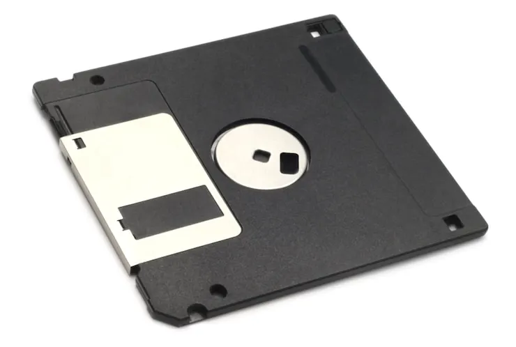
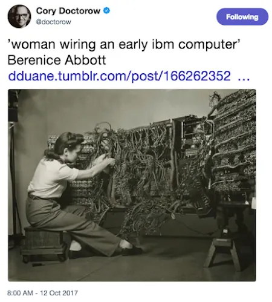

1 Introducción
Este libro pretende ser una guía sencilla con referencias al estado de la cuestión y herramientas en boga. Hablaremos de:
- Sistemas de gestión de datos
- Mejores prácticas en el modelado
- Herramientas de volcado y transformación
- Buen gobierno de los datos
- Calidad y monitorización
E intentaremos cubrir las últimas tendencias en herramientas, en la medida de lo posible. Para ello, deberemos hacernos eco del ciclo de vida de los datos en toda su extensión.

El del ingeniero de datos es un rol a caballo entre las áreas de negocio y los desarrolladores de software, tomando gran parte de las prácticas aprendidas de estos. Aunque enfocándonos en la puesta al servicio de los datos.
Y empezaremos con un concepto que no está exento de controversia: el modelado de datos. Aunque para ello, debemos entender el contexto histórico que rodea a los ingenieros de datos trasladándonos a los primeros sistemas de gestión de datos y su aparición a finales de los años 60 del siglo pasado.
1.1 Inicios
Con frecuencia olvidamos el recorrido que hemos realizado en el mundo de la informática y cómo impacta las decisiones o aspectos de los sistemas de hoy día.
Es habitual que las nuevas generaciones no sepan el origen del símbolo de guardar.
El disquete que era un medio físico para guardar contenido (el pendrive de los antiguos).

Pero mucha gente se olvida que la configuración de teclado que empleamos en la actualidad es España, QWERTY por las primeras teclas en el extremo superior izquierdo de los teclados, es una herencia de las máquinas de escribir y que esta configuración a pesar de no ser la que nos permite una mayor velocidad de redacción impedía que los martillos de la máquina se bloquearan.
La misma razón por la que la tecla enter en sus inicios se conocía como retorno de carro (return carriage) cuando no existe carro que retornar en nuestros ordenadores modernos.
Por eso es importante entender el trasfondo histórico y las herencias que a pesar de no ser muy lógicas, determinan algunas de las prácticas que nos encontramos en la actualidad.
1.2 Los sistemas centrales
En sus inicios, las máquinas evolucionaron de máquinas individuales donde tarjetas perforadas determinaban los automatismos, a sistemas electrónicos y sofisticados que disponían de canales de entrada y salida (teclados y pantallas) para realizar las acciones que determinaban las acciones de la máquina.

International Business Machines (IBM) fue una de las primeras compañías en realizar esa transición de máquinas que habían servido para fines militares al ámbito comercial, corporativo, al servicio de instituciones privadas con problemas de grandes dimensiones.
En aquella época las máquinas que hoy llamamos ordenadores o computadoras eran recursos muy costosos y por ello, existían unidades centrales a las que se accedía desde nodos terminales. Sistemas únicamente de acceso a la máquina a la que estaban conectadas para pedirle que hiciera algo, introducir datos de cuentas de cliente, operaciones de cálculo y balances, etc. Lo habitual en la empresa donde este rol lo cubrían secretarias que venían de ámbitos como la mecanografía.
No existía internet además y una vez salíamos del dominio de la empresa no se podía actuar sobre esos sistemas. Había que hablar en un lenguaje de muy bajo nivel con la máquina, poco intuitivo para gente poco versada en esas tecnologías. Eran tiempos oscuros.
Estos sistemas gestionaban tanto los datos que los empleados iban registrando así como las acciones que se realizaban sobre estos con rutinas que reflejan la operativa de la compañía: procesos de compra, transferencias bancarias, facturación de servicios y contabilidad general, entre otros.
Son los que conocemos como sistemas centrales de datos y gran parte de este trabajo se lo debemos a una persona en concreto, Edgar Frank Codd, y su trabajo en este ámbito titulado Un modelo tabular1 de datos para grandes bancos de datos compartidos (Codd 1970).
Os sorprendería la cantidad de empresas que aún a día de hoy emplean máquinas mainframe con programas COBOL que muy pocos individuos a nivel global saben a ciencia cierta lo que hacen. Es parte de la deuda técnica que muchas empresas no terminan de quitarse de encima por mucho avance de la tecnología que haya. Es parte de nuestra componente humana y la dificultad que nos supone el cambio.
Uso la traducción tabular de el término inglés relation que se refiere a la estructura de los datos y la traducción a relacional puede dar a entender una gestión relacional que no es tal en los sistemas que ideó Codd.↩︎